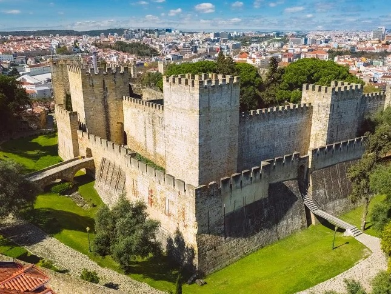
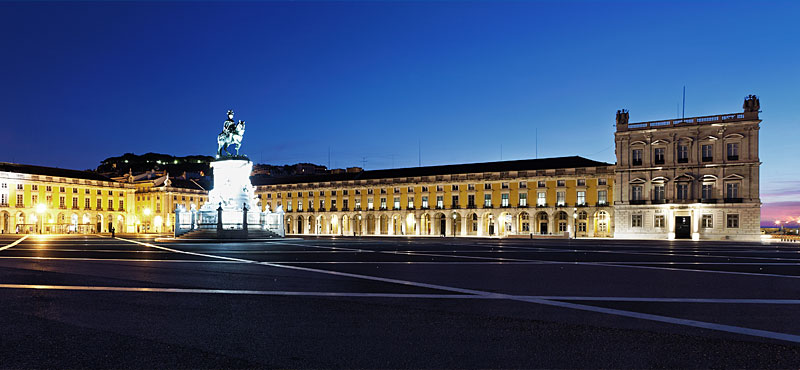
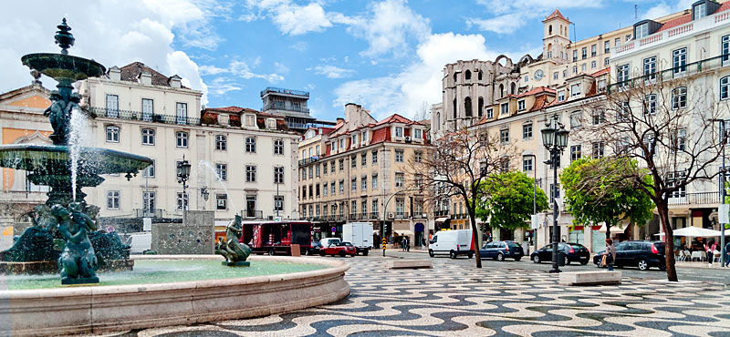
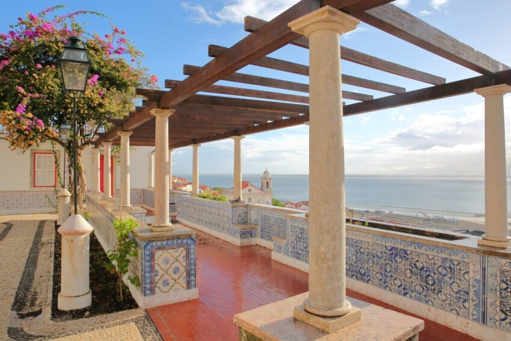
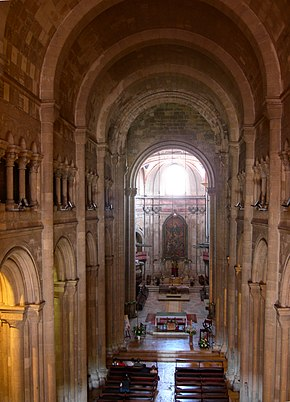

Castello di São Jorge

Il Castello di Sao Jorge è uno degli edifici più antichi della città e uno dei siti più significativi e
visitati dai turisti. La sua posizione, sul colle più alto di Lisbona, regala una vista mozzafiato su
tutta la città e sull’estuario del fiume Tago; imperdibile il giro delle mura per un panorama a 360
gradi. Data la sua posizione privilegiata, il castello è sempre stato un punto chiave nelle guerre che
si sono succedute nei secoli: i primi insediamenti fortificati risalgono addirittura al VI secolo a.C.
Praça do Comércio

La piazza più grande di Lisbona è situata sull’estuario del fiume Tago: qui all’inizio del Cinquecento
fu costruito il Palazzo Reale Ribeira, residenza del Re per circa duecento anni, prima di essere
distrutto dal terribile terremoto del 1755. Dopo il terremoto, il Marchese di Pombal, ministro
dell’interno del governo di allora, fece rimodellare e ricostruire completamente la piazza,
restituendole la giusta posizione di prestigio all’interno della città e integrandola al lussuoso
quartiere Baixa. Alla Piazza fu cambiato nome in Praca do Comercio, ad indicare la sua nuova funzione
commerciale, dato che divenne il luogo in cui i mercanti commerciavano i prodotti esteri e dove i
finanziatori commissionavano ai navigatori le spedizioni verso mondi sconosciuti.
Baixa, il quartiere basso

La Baixa è il quartiere di Lisbona compreso tra il fiume Tago e Rossio, proprio al centro delle colline
su cui giacciono i quartieri Alfama e Bairro Alto. Partendo dall’Arco da Rua Augusta, la Baixa si dirama
in un intreccio di rette e parallele, con un preciso ordine geometrico. Fu voluto così dal Marchese di
Pombal, che ne guidò l’edificazione in seguito al terremoto del 1755, e fece costruire tutti gli edifici
secondo principi antisismici. Situato nel cuore della città di Lisbona, l’elegante quartiere è il centro
della vita diurna della capitale, con i suoi negozi alla moda, i ristoranti, le pasticcerie tradizionali
e gli innumerevoli bar dove poter gustare un bicchierino di qualche tipico liquore locale. La via
principale è la pedonale Rua Augusta, che dall’omonimo Arco arriva fino a piazza Rossio, altro centro
nevralgico della città. Qui hanno sede molte banche e aziende, che rendono Baixa un importante centro
commerciale ed economico.
Miradouro de Santa Luzia

Percorrendo gli stretti vicoli in salita dell’Alfama, ci si imbatte spesso in piazze e belvedere che non
ci aspetteremmo ma che sono, invece, una delle caratteristiche di questo quartiere. Uno dei più
caratteristici e più belli è il Miradouro de Santa Luzia, dal quale si gode una splendida vista sul
fiume Tago e sui tetti rossi dell’Alfama. Si vedono bene anche le antiche mura arabe della città, la
Cupola di Santa Egracia, la Chiesa di Santo Estevao e le due torri bianche della Chiesa di San Miguel.
La particolarità di questa terrazza è la sua una struttura ad archi tutta ricoperta di piante e fiori,
coloratissimi in primavera ed estate. Al colore dei fiori, si aggiunge quello delle tipiche piastrelle
portoghesi, le azulejos, che ne tappezzano le pareti.
Cattedrale di Lisbona

La piazza più grande di Lisbona è situata sull’estuario del fiume Tago: qui all’inizio del Cinquecento
fu costruito il Palazzo Reale Ribeira, residenza del Re per circa duecento anni, prima di essere
distrutto dal terribile terremoto del 1755. Dopo il terremoto, il Marchese di Pombal, ministro
dell’interno del governo di allora, fece rimodellare e ricostruire completamente la piazza,
restituendole la giusta posizione di prestigio all’interno della città e integrandola al lussuoso
quartiere Baixa. Alla Piazza fu cambiato nome in Praca do Comercio, ad indicare la sua nuova funzione
commerciale, dato che divenne il luogo in cui i mercanti commerciavano i prodotti esteri e dove i
finanziatori commissionavano ai navigatori le spedizioni verso mondi sconosciuti.